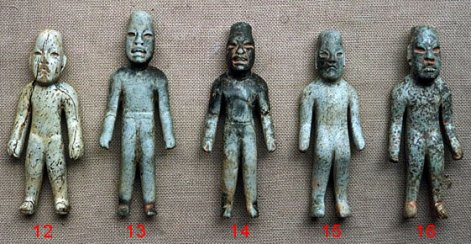

|
Why did the Olmec Civilization disappear?
They disappeared
for the same reason that the Maya, Inca, Romans, and countless other
civilizations did. All of them disappeared after reaching the pinnacle
of their expressed level in their civilizations, this is the way it has been
and this is the way it will always be.
All researchers
need to understand, humans like their civilizations are created from
consciousness. This takes place prior to any physical creation,
regardless of the level or purpose. Failing to account for the pre
nonphysical process will only accentuate the mystery. In other words,
science will never finds out why civilizations end any more than why
animal species become extinct. The so called destruction reasons that
researchers give, be it famine, war, drought, or anything else are just
tools of choice. The combined mass consciousness of those in their specific
forms, be it animal or human use these tools to exit from a reality. A nation is a
group of spirits, the incarnation of certain concentrations of energies
and specific elements of a soul group, or the combination of groups.
Each epoch brings to the Earth Reality a different group of spirits and
a different race.
When
this race has fulfilled its tasks of carrying out the new ideas and
developing their new civilization to its fullest desire it ceases. It
functionally has reached its purpose and with this the loss of interest
to continue what has been already learnt. The purpose is to evolve and
grow as this is the primary driving force behind all spiritual levels. After the
accomplishment has been achieved no further incarnations are needed in
this level of vibration (civilization in this case). The interest shifts
to the next level and in this level a new pre-organized co-creation. These
co-creations include new civilizations on Earth or somewhere else and
typically in different time frames (for further understandings see “The
Schematic of God” book on this site). In every race or
culture there are individuals who don’t quite “keep up with the
evolutional pace of the majority. So at the end of the civilization’s
epoch period these individuals find themselves at lower vibrational
states then the majority, and thus need to remain behind. They must
continue the reincarnate cycle, as new physical members in an old dying
civilization. They are, in a polite way of saying it, prisoners of their
own doing, as no one is holding back anyone in this process. They must
continue to develop on earth in that level before they can move to the
next level of spiritual development. In some civilizations these
individuals can recycle for hundreds of years before achieving this.
This is not new as it is still going on today with some using their many
lifetime experiences to become cultural leaders, this is without
achieving higher vibrational states of evolution. I was shown that over a few generations the “Shang Shamans” (my way of separating the two groups) became more powerful and secretive with their power. This was not met with acceptance by the bulk of the population and especially the shamans belonging to some of the “Original clans”. The cultures that united in the past now started to separate, through segregated shamanic clans. As the elite “Shang type” of shamans became more powerful they also became aware of their fragile security, as they were outnumbered. Their shrines (the power source) were now being created in secrecy to protect them. This usually meant burying them under the floors of their compounds. In the La Venta pyramid Complex “A” there are more than 50 separate caches and shrines by one count, including buried Jade celts, polished mirrors made of iron-ores, and five large shrines composed of Serpentine blocks. One of the Serpentine caches is estimated to contain 50 tons of carefully finished serpentine blocks, covered by 4,000 tons of clay fill. (For more understanding of Shrines). Among the unearthed shrines in Complex A were 3 rectangular mosaics each roughly 15 ft. × 20 ft. with each consisting of up to 485 blocks of serpentine. These blocks were arranged horizontally to form what has been variously interpreted as an ornate Olmec bar-and-four-dots motif of the Olmec Dragon. The photo shown below of the mask is the proper orientation of this dragon's face and is an icon of the Shang dragon se
en on this bronze bowl
beside it.
|
 |
Shrines are the
main tool of advanced shamanic processes.
They can be created from many different formats, but the
results, if done right are always perfect. Shrines allow specific
focused states in to any direction of thought, research, or teachings. It
is through these angular connections that alignment into the Universal
Grid allows a shaman to enter specific “porthole” for direct energetic
connection. A shrine can be created with bowls, stone, plant material,
and so on. It is the arrangement of the energies (of the objects),
combined with the placement to one another (the facilitator’s part), in
correlation to the Earth and Universal Grids that is the secret to it
success. Rendered down; connecting present desires, with one’s own
energy, in correlation to "All That Is". |
Complex A |
The Olmec Figurine Shrine, "La Venta
|
|
The
fascination for this shrine has crossed many paths and avenues of
research. One interesting study of this shrine came from a researcher by
the name of Carolyn E. Tate of Texas Tech University. She states;
“Their most significant feature, the pose, is compared to a similar pose
found in spiritual practises of China and India.” She goes no
saying; “The flexing of the knee
to straighten the spine is a very specific position that in ancient
China is the beginning of the Tie Chi exercise, a position of meditation
and of the union of the body the cosmic axis.” |
|
http://www.mesoweb.com/pari/publications/rt10/Tate1996-OCR.pdf |
What is a Shaman: for more information on the subject.
My teachings on this subject:
This shrine is a collage created by 17 different
shamans. Each one of them is from a different cultural aspect of the
“Shang” Shaman Council. Each figurine not only represents themselves,
but was embedded with the energy work that they were proficient in. In the sculptures
shown below are the capsulated energy of each shaman involved in this
council. Together they create a cache that is no different than the
caches mentioned from North America (see Cache Page). Each shaman gave
an extremely valuable part of themselves to this shrine. Each position
and angle is connected to many of the 360 degrees of the Universal Orb, and
through a
spiral arrangement. To facilitate with this careful spiral alignment the
miniature statues were fixed in to place using white sand that could be
adjusted. Photos show 16 figures and 6 inscribed celts but originally there were 17 and 7 celts! |
It doesn’t take much imagination to
see something is missing from this arrangement. In the photo shown above
one can see there is a gap in the celts as well as in the standing
figurines. These were the positions of the seventh celt and the
seventeenth figure. I was told the
missing figure was the most powerful and elder of this shamanic council.
The original intent of the shrine was to “ground” the dying culture into
the physical, to give them a longer lasting time period. They had seen
the end of their way of life and were trying to stop this end from
reaching their level of reality. The seventeen figurines and seven celts
were buried to ground the specific individual energies of these powerful
members and their consenting laws. Unfortunately the seventeen and the elder died
shortly after this shrine’s creation. This meant that he was more
connected to nonphysical realities and not as powerful now in the
physical. He had transcended into the next level of their evolution, but
his essence and membership was still part of the shrine. This was
interpreted by one of the members as a leakage of energy and
justification to have this part removed from the shrine. Anyone working
with shrines will understand this position of choice. The concerned
shrine member decided to reopen the shrine to a level where they
could see the elder’s statue and remove it along with one celt.
This was an act that defied the seventh law
inscribed on the 7th celt, as this law was a statement of non-interference between
shamans. To compete their decision the celt that governed this
non-interference law had to be removed. Unfortunately the shrine and the
re arrangement did not work. The reason is that the attempt was not in
line with their evolution. The evolution and the dismantling of the
culture was next in line for all of them,
and their intellectual approach was not of service to them.
|
|
|
In the photos
above one can see the original positions as compared to the modern
display of them. Unfortunately the modern display shows no understanding
of how important position is for connecting to the appropriate energies.
|
 |
The Olmec Figurines A brief description of the individual shamans in this shrine:  |
|
|
|
|
|
|
 |
|
In the pictures above are interesting similarities between ancient
Chinese shaman’s (Wu) headdress and a stylized portrayal of the same
image on this Olmec mask. The left images are Shaamxi tomb rubbings
showing Xi Wangmu wearing her sheng crown. |
The top objects are from Asia and are
shaman’s mirrors. I was told these concave mirrors were filled with
water and used in similar ways that a psychic would use a crystal ball.
The two mirrors on the bottom were also used in
the same way. The one to the left is an Olmec mirror which were typically
made from iron ores. The mirror on the right bottom is call a Discoidal
and was used in the same way but could also be applied for other
shamanic purposes. It is from the American Woodland Period and was found
in the Mississippi Delta in Leflore Co. It was carved out of a very hard
rock called Pyroxene, a type of Gabbro. I was told that the bottom
pattern in this type of mirror actually helped in seeing the visions
being researched by the shaman.
This
highly polished Discoidal is actually broken in half. I digitally spliced the mirror of
itself together to show a complete tool. While working with this piece I
was told this shaman saw a scene in their future that was very horrific.
To lock this event out of the future the Discoidal was broken. Working
with my broken Discoidal
generated more teachings of why some shamanic cultures broke their
vision bowls. The Maya were one of these cultures. They used the bowls
to see into the future and by smashing the bowl it would prevent or it
could lock the image in its “current state”.
|
Olmec bloodletting perforators or Chinese hair pins? |
Cowry Shells, the Sacred Migiis Shell
The more one researches into the "common ground" of the Olmec and Shang connection the more similarities pop up. Below is another one of these connections:
Quote from:
http://the-wanderling.com/midewiwin.html
The sacred Migiis shells (cypraea moneta) used by the Midewiwin, have
been found in various North American earth mounds, lost and buried long
before the first known white contact. Since they only grow in the South
Pacific, their prevalence in pre-contact days is one of those mysteries
that is difficult to explain. It is known these
same shells, cypraea moneta, have been immediately valued and desired by
nearly every so-called primitive people when introduced by traders. It
is as if every tribal people recognizes something very "special" about
this certain shell. Other cowries are larger, more colorful, and are
liked for their ornamental value, but cypraea moneta, the Migiis shell,
is revered.
Quote from:
http://www.healthfreedom.info/who_are_the_anishinabeg.htm
The sacred Migiis shells (cypraea moneta) used by the Midewiwin
(Medicine) Society actually originate in the South Pacific, not North
America as many believe. The First Prophecy (or Fire) prepares the
Anishinabe (The People) for an Exodus out of their original land. The
prophet asks them to carry Migiis shells to help then remember where
they came from. By the time of the Second Fire the People have lost
their way.
The Shang Dynasty
Inscriptions
and archaeological evidence show that cowrie shells were regarded as
important objects of value in the Shang Dynasty (c. 1766-1154 BC). In
the Zhou period, they are frequently referred to as gifts or rewards
from kings and nobles to their subjects. Later imitations in bone, stone
or bronze were probably used as money in some instances. Some think the
first Chinese metallic coins were bronze imitations of cowrie shells
found in a tomb near Anyang dating from around 900BC, but these items
lack inscriptions. |
http://www.pcas.org/Vol35N23/3523Koerper2.pdf
http://www.conchsoc.org/pages/MW_6_p19-21a.pdf NEW: Pale Ink, an interesting free book on the topic of the Chinese discovery of America. http://www.sacred-texts.com/earth/pi/ The Chinese pyramids, like the Olmec ones they are built out of earth. http://www.bibliotecapleyades.net/piramides/esp_piramides_china_3.htm http://www.bibliotecapleyades.net/piramides/esp_piramides_china_5.htm For more on how to use shrines For more on how to connect with ancient sacred sites |
Back to Page 1 HOME SITE MAP |
View Larger Map